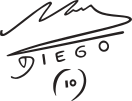

Trayectoria de Diego jugador
1976-1980: Inicios en Argentinos Juniors
En 1976, a los 15 años, fue contratado por Argentinos Juniors, un importante club de primera división. Un año después fue convocado para jugar en la selección nacional. Le decían «el pibe de oro».
1978-1979: Primeras convocatorias y campeón del Mundial Juvenil
A los 17 años, ya era uno de los 25 mejores jugadores argentinos, pero no estaba maduro lo suficiente como para formar parte del equipo que consagró a la Argentina como campeón del mundo en la copa que el país organizó en 1978. En el año siguiente, Diego fue el capitán del equipo que ganó el mundial sub-20 en Japón.
1981: Primer paso en Boca Juniors y único título en Argentina
La última vez que se lo vería a Diego con la camiseta del Bicho fue el 4 de febrero de 1981, en un amistoso ante Villa Dálmine.
Aunque ‘El Pelusa’ ya había recibido ofertas para jugar en otros clubes, entre ellos el América de Cali, fue en 1981 que decidió a abandonar Argentinos Juniors debido a sus constantes peleas con la directiva. La oferta más importante la había realizado River Plate, pero finalmente fue cedido a préstamo por un año y medio a Boca Juniors, un club que pasaba por una mala situación económica y no se encontraba en condiciones de comprar su pase.
En sus primeros meses en Boca, Diego tuvo varios inconvenientes. La relación con Silvio Marzolini, al igual que con muchos de los entrenadores que lo dirigieron, no era del todo buena. Aparecieron los malos resultados y las presiones de los hinchas. Aun así, pudieron conquistar el Campeonato Nacional, que es el único título conseguido por Diego Maradona en el fútbol argentino.
1981-1982: Primer Mundial y fracaso en España 82
Antes de su primera Copa del Mundo, el pase de Maradona al FC Barcelona ya se había concretado, por lo que en España existía mucha expectativa por el rendimiento del jugador argentino. Desafortunadamente, ‘La Albiceleste’ debutó con derrota (1-0) ante Bélgica.
Luego, venció (4-1) a Hungría (en ese partido Diego convirtió sus dos primeros goles mundialistas) y (2:0) a El Salvador, por lo que clasificó a la segunda ronda. Pero, en ésta fue derrotada por Italia (2-1) y por Brasil (3-1). Maradona fue expulsado en el segundo partido tras pegarle una violenta patada a Batista y Argentina quedó eliminada del Mundial.
1982-1984: Paso por F.C Barcelona
Después de ese inesperado fracaso, se oficializó su venta al Barcelona. El club catalán pagó 1.200 millones de pesetas por su pase. Maradona apareció por primera vez con la camiseta azulgrana el 3 de agosto de 1982, en un amistoso contra el SV Meppen. El primer partido oficial fue el 4 de septiembre de 1982, donde, pese a que convirtió un tanto, su equipo cayó (2-1) con Valencia.
En diciembre de 1982, habiendo disputado 13 partidos de la Liga y marcado 6 goles, se le detectó una hepatitis, por lo que debió abandonar las canchas por 4 meses. Cuando Diego regresó su compatriota César Menotti era el nuevo entrenador del equipo. Juntos ganaron en 1983 la Copa del Rey y la Copa de la Liga; en ambas finales vencieron al Real Madrid con goles de Maradona.
La siguiente temporada fue bastante mala para el argentino. El 24 de septiembre de 1983 se fracturó el tobillo después de una dura entrada de Andoni Goikoetxea, por lo que estuvo casi 4 meses fuera de las canchas.
1984-1991: Consagración en Napoli
El que el 29 de junio de 1984, se anunció su traspaso al Napoli por 8 millones de euros y 4 años de contrato. La presentación fue el 5 de julio de 1984, en un Estadio San Paolo que contó con la asistencia de 80 mil hinchas, en la que se estima que fue una de las presentaciones más grandes de la historia del fútbol.
Su debut en la Serie A se produjo el 16 de septiembre contra el Verona, en una derrota (3-1). Esa temporada, que no fue del todo buena para los napolitanos, aunque Diego marcó 14 goles.
Al regresar del Mundial en México, Maradona inició una excelente temporada con el Napoli. Consiguieron el primer Scudetto de la historia de la institución, y además ganaron la Copa de Italia. Diego fue el máximo artillero del torneo con 10 goles, lo que significó su paso a la inmortalidad de la institución napolitana.
Los títulos conseguidos con Argentina y con el Napoli volvieron a llenar de ofertas a Maradona. Sin embargo, renovó su contrato hasta 1993, con un sueldo de 5 millones de dólares anuales. Se quedó porque quería seguir haciendo historia y lo consiguió. En la temporada 1988-89 le dio al club italiano su primer título internacional: la Copa UEFA. La alegría de los hinchas azurri no paró, ya que en la siguiente campaña ganaron su segundo Scudetto y la Supercopa de Italia.
1986: Campeón mundial en México
En su segunda Copa del Mundo, Diego Armando Maradona fue dirigido por Carlos Salvador Bilardo, quien reemplazó a Menotti tras el fracaso en España 82. Diego estuvo casi 3 años sin jugar con ‘La Albiceleste’ por decisión del nuevo entrenador, que prefirió convocar solamente a jugadores del medio local. Finalmente, lo llamó para disputar las Eliminatorias y, como no, ser protagonista en la clasificación de su país.
Ya en la fase de grupos del Mundial, Argentina derrotó a Corea del Sur (3-1) y a Bulgaria (2-0), y empató con Italia (1-1) con gol de Diego; terminó líder de su grupo y en octavos de final venció a Uruguay (1-0); en los cuartos de final superó a Inglaterra (2-1) en el partido más recordado de la carrera de Maradona. El partido, jugado el 22 de junio en el Estadio Azteca, contó con dos de los goles más recordados en la historia de los mundiales, conocidos popularmente como el ‘Gol del Siglo’ y la ‘Mano de Dios’. Ambos logrados por el ‘Pibe de Oro’.
Ya en semifinales, ‘La Albiceleste’ se impuso sobre Bélgica (2-0) con otro doblete de Diego. Se clasificó a la final, que se jugó nuevamente en el Azteca, contra Alemania Federal el 29 de junio. Pese a que Maradona no marcó ese día, terminó levantando la Copa del Mundo gracias al triunfo de su país (3-2). Diego Maradona se consagró en el Mundial de México 86, convirtiendo 5 goles y dando 5 asistencias en los 7 partidos que disputó.
Un desempeño que ha sido catalogado como la mejor actuación individual de un futbolista en toda la historia del torneo.
1990: Subcampeón mundial de Italia 90
Con todos estos trofeos en su palmarés llegó Diego al Mundial de Italia 1990. Tras la consagración en México 86, la selección argentina no había podido mantener la supremacía futbolística. En la Copa América de 1987 había obtenido el cuarto puesto, mientras que en la de 1989 quedó en tercer lugar. Pese a ello, lograría llegar por segunda vez consecutiva a la final de la Copa del Mundo.
Los gauchos terminaron terceros de su grupo luego de perder con Camerún (1-0), derrotar a la Unión Soviética (2-0) y empatar con Rumania (1-1). En los octavos de final superaron a Brasil (1-0), en cuartos eliminaron a Yugoslavia por penales y en la semifinal vencieron a Italia, también en penaltis. Argentina daba señales de no estar en su mejor forma y por eso cayó ante Alemania Federal (1-0) en la disputa por el título.
1992-1993: Sevilla
El 1 de julio de 1992 vencía la suspensión de 15 meses impuesta por la FIFA y su pase estaba todavía en poder del Nápoles, club que buscaba su reincorporación al plantel. Pero Maradona quería alejarse de Italia, quería jugar para un club que no tuviera grandes exigencias deportivas. Estuvo en conversaciones con el Sevilla y el Marsella, inclinándose finalmente por el primero, quien pagó 5,7 millones de euros por su traspaso.
Debutó oficialmente con el conjunto andaluz el 4 de octubre de 1992, en partido correspondiente a la quinta fecha de la Liga. Curiosamente, el rival fue el Athletic, el mismo club ante el que había jugado su último partido en el fútbol español ocho años antes.
A pesar del buen inicio de temporada, Diego empezó a tener problemas con los directivos debido a sus constantes salidas nocturnas y faltas a entrenamientos. Esto provocó que el equipo contratara un detective, quien seguía sus actividades fuera del campo. Como si fuera poco, ‘El Pelusa’ se resintió de una antigua lesión en la rodilla y tuvo que jugar infiltrado varios partidos. En uno de ellos, frente al Real Burgos, se enojó por ser sustituido e insultó al entrenador Carlos Bilardo. En total, disputó 29 encuentros, marcó 6 goles y dio 9 asistencias en su segundo paso por España.
1993-1994: Regreso al fútbol argentino: Newell's Old Boys
En 1993 se produjo su vuelta al fútbol argentino, esta vez con la camiseta de Newell’s Old Boys. El 13 de septiembre llegó el primer entrenamiento y 40.000 personas se habían reunido a verlo, en medio de una fiesta organizada por el entrenador Jorge Raúl Solari. La cosa pintaba bien, sin embargo, un desgarro y un cambio de entrenador opacaron su etapa con los rosarinos.
1993-1994: Regreso a la Selección y Mundial de Estados Unidos
Representó por cuarta vez a su país en una Copa del Mundo. Argentina goleó a Grecia (4-0) -en ese partido Maradona marcó su último gol en los mundiales- y venció a Nigeria (2-1) -en ese encuentro Diego tuvo que pasar por el control antidopaje-. En los análisis se le detectaron cinco sustancias prohibidas: efedrina, norefedrina, seudoefedrina, norseudoefedrina y metaefedrina, por lo que fue suspendido por 15 meses, y tuvo que abandonar la concentración argentina.
Fue en esta ocasión cuando dijo su famosa frase «me cortaron las piernas». El partido contra Nigeria, en Boston, fue el último disputado por Diego con la Selección Argentina, jugando un total de 91 encuentros y anotando 34 goles.
La selección, afectada considerablemente por la pérdida de su máxima estrella, cayó ante Bulgaria (2-0). Aun así, se clasificó a los octavos de final, donde fue eliminada por Rumania (3-2), con gol de Gheorghe Hagi, que era apodado ‘el Maradona de los Cárpatos’.
1995-1997: Retiro del fútbol en Boca Juniors
Debido a la sanción que tuvo durante toda la temporada 1994-95, el sueño de Maradona para su vuelta al fútbol era ser técnico y jugador de Boca Juniors. Una vez firmado el contrato que sellaba su regreso al xeneize, Maradona comenzó a ponerse en forma para el día del debut. Su regreso oficial fue en Seúl el 30 de septiembre, en un partido contra la Selección de Corea del Sur que Boca ganó (2-1).
A pesar de encontrarse habilitado para jugar, en un partido frente a Colo-Colo por la Supercopa sufrió una lesión que lo mantendría en inactividad durante varios días. Volvería a jugar recién el 25 de octubre de 1997, en el partido que Boca Juniors derrotó como visitante a River Plate (2-1), siendo reemplazado en el entretiempo por Juan Román Riquelme. Ese sería además su último partido oficial, ya que anunció su retiro del fútbol profesional el mismo día de su cumpleaños número 37.
«No sé con qué pagarles, de verdad. Yo traté de ser feliz jugando al fútbol y hacerlos felices a todos ustedes. Creo que lo logré y, la verdad, que hoy no me lo esperaba porque esto es demasiado, demasiado para una persona, demasiado para un jugador de fútbol. Les agradezco con mi corazón. El fútbol es el deporte más lindo y más sano del mundo. Eso no le quepa la menor duda a nadie. Porque se equivoque uno, no, no tiene que pagar el fútbol. Yo me equivoqué y pagué. Pero… pero la pelota no, la pelota no se mancha»
